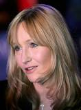

J. K. Rowling

Escribir es una actividad tan común que, por tal razón, está muy devaluada. Hay muchos escritores para toda la gente que está dispuesta a leer, y por eso los escritores son muy mal pagados. Sin embargo, existen casos puntuales en el que esta regla se rompe, y quizás el más representativo de todos sea el de J.K. Rowling.
Joanne Rowling es una novelista, guionista y productora de cine británica que es conocida en todo el mundo por ser la autora de serie de libros de fantasía para jóvenes, Harry Potter. Los libros han vendido entre todos más de 400 millones de copias, siendo así la serie de libros más vendida de la historia, y convirtiendo a Rowling en la escritora más rica del mundo. A su vez, la historia de superación de esta escritora es impresionante y vale la pena conocerla.
Primeros años
Joanne Rowling es hija de Peter James Rowling, un ingeniero de aviación de Rolls-Royce, y Anne Rowling (de soltera Volant). Nació el 31 de julio de 1965 en el poblado de Yate, Gloucestershire (Reino Unido). Uno de sus bisabuelos maternos, Dugald Campbell, era escocés y el abuelo paterno de su madre, Louis Volant, era francés, y fue galardonado con la Croix de Guerre por su valentía excepcional al defender la aldea de Courcelles-le-Comte durante la Primera Guerra Mundial. Su hermana, Dianne, nació en casa un mes antes de que Joanne cumpliera los 2 años. La familia se mudó a la cercana aldea de Winterbourne 2 años más tarde.
Foto: antigua foto familiar en la que aparece la madre de Joanna, ella y su hermana pequeña | vía Business Insider.
Cuando era niña, Joanne solía escribir historias de fantasía que le leía con frecuencia a su hermana. Siendo una joven adolescente, su tía abuela le regaló una copia de la autobiografía de Jessica Mitford, “Hons and Rebels”. La autora se convirtió en la heroína de Joanne, quien terminó por leer todos sus libros; eso marcó el hecho de una infancia y juventud muy ligada a la literatura que se reflejaría en su futuro.
Rowling ha dicho que sus años de adolescencia fueron infelices. Su vida hogareña se complicó por la enfermedad de su madre: esclerosis múltiple, y una relación tensa con su padre, con quien no se hablaba. Sean Harris, su mejor amigo en esa época, era dueño de un Ford Anglia turquesa que, según ella, inspiró una versión voladora que aparecería en su libro “Harry Potter y la Cámara de los Secretos”. Al igual que muchos adolescentes, se interesó en la música pop, escuchó a The Clash, Smiths y Siouxsie Sioux y adoptó el aspecto de este último: con el pelo peinado hacia atrás y los ojos pintados con delineador negro; un look que todavía tendría al comenzar la universidad.
Foto: Casa donde J.K. Rowling vivió su infancia | vía Wikipedia.
Educación
Asistió a St Michael’s Primary School, una escuela fundada por el abolicionista William Wilberforce y la reformadora Hannah More. Su director, Alfred Dunn, ha sido sugerido también como la inspiración para el director de la Escuela Hogwarts de Magia y Hechicería, Albus Dumbledore. Ella asistió a la escuela secundaria en Wyedean School and College, donde su madre trabajó en el departamento de ciencias. Steve Eddy, su primer profesor de inglés en la escuela secundaria, la recuerda como “no excepcional, aunque de un grupo de chicas muy buenas para el idioma”.